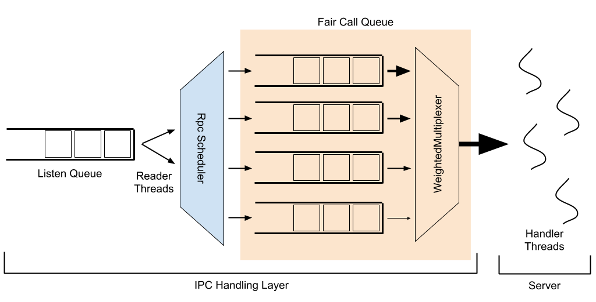

This document describes how to configure and manage the Fair Call Queue for Hadoop.
Make sure Hadoop is installed, configured and setup correctly. For more information see:
Hadoop server components, in particular the HDFS NameNode, experience very heavy RPC load from clients. By default, all client requests are routed through a first-in, first-out queue and serviced in the order they arrive. This means that a single user submitting a very large number of requests can easily overwhelm the service, causing degraded service for all other users. The Fair Call Queue, and related components, aim to mitigate this impact.
There are a few components in the IPC stack which have a complex interplay, each with their own tuning parameters. The image below presents a schematic overview of their interactions, which will be explained below.

In the following explanation, bolded words refer to named entities or configurables.
When a client makes a request to an IPC server, this request first lands in a listen queue. Reader threads remove requests from this queue and pass them to a configurable RpcScheduler to be assigned a priority and placed into a call queue; this is where FairCallQueue sits as a pluggable implementation (the other existing implementation being a FIFO queue). Handler threads accept requests out of the call queue, process them, and respond to the client.
The implementation of RpcScheduler used with FairCallQueue by default is DecayRpcScheduler, which maintains a count of requests received for each user. This count decays over time; every sweep period (5s by default), the number of requests per user is multiplied by a decay factor (0.5 by default). This maintains a weighted/rolling average of request count per user. Every time that a sweep is performed, the call counts for all known users are ranked from highest to lowest. Each user is assigned a priority (0-3 by default, with 0 being highest priority) based on the proportion of calls originating from that user. The default priority thresholds are (0.125, 0.25, 0.5), meaning that users whose calls make up more than 50% of the total (there can be at most one such user) are placed into the lowest priority, users whose calls make up between 25% and 50% of the total are in the 2nd lowest, users whose calls make up between 12.5% and 25% are in the 2nd highest priority, and all other users are placed in the highest priority. At the end of the sweep, each known user has a cached priority which will be used until the next sweep; new users which appear between sweeps will have their priority calculated on-the-fly.
Within FairCallQueue, there are multiple priority queues, each of which is designated a weight. When a request arrives at the call queue, the request is placed into one of these priority queues based on the current priority assigned to the call (by the RpcScheduler). When a handler thread attempts to fetch an item from the call queue, which queue it pulls from is decided via an RpcMultiplexer; currently this is hard-coded to be a WeightedRoundRobinMultiplexer. The WRRM serves requests from queues based on their weights; the default weights for the default 4 priority levels are (8, 4, 2, 1). Thus, the WRRM would serve 8 requests from the highest priority queue, 4 from the second highest, 2 from the third highest, 1 from the lowest, then serve 8 more from the highest priority queue, and so on.
In addition to the priority-weighting mechanisms discussed above, there is also a configurable backoff mechanism, in which the server will throw an exception to the client rather than handling it; the client is expected to wait some time (i.e., via exponential backoff) before trying again. Typically, backoff is triggered when a request is attempted to be placed in a priority queue (of FCQ) when that queue is full. This helps to push back further on impactful clients, reducing load, and can have substantial benefit. There is also a feature, backoff by response time, which will cause requests in lower priority levels to back off if requests in higher priority levels are being serviced too slowly. For example, if the response time threshold for priority 1 is set to be 10 seconds, but the average response time in that queue is 12 seconds, an incoming request at priority levels 2 or lower would receive a backoff exception, while requests at priority levels 0 and 1 would proceed as normal. The intent is to force heavier clients to back off when overall system load is heavy enough to cause high priority clients to be impacted.
The discussion above refers to the user of a request when discussing how to group together requests for throttling. This is configurable via the identity provider, which defaults to the UserIdentityProvider. The user identity provider simply uses the username of the client submitting the request. However, a custom identity provider can be used to performing throttling based on other groupings, or using an external identity provider.
If particular users submit important requests and you don’t want to limit them, you can set them up as the service-users. They are always scheduled into the high-priority queue and won’t be included in the priority computation of normal user calls.
Though the fair call queue itself does a good job of mitigating the impact from users who submit a very high number of requests, it does not take account into how expensive each request is to process. Thus, when considering the HDFS NameNode, a user who submits 1000 “getFileInfo” requests would be prioritized the same as a user who submits 1000 “listStatus” requests on some very large directory, or a user who submits 1000 “mkdir” requests, which are more expensive as they require an exclusive lock on the namesystem. To account for the cost of an operation when considering the prioritization of user requests, there is a “cost-based” extension to the Fair Call Queue which uses the aggregate processing time of a user’s operations to determine how that user should be prioritized. By default, queue time (time spent waiting to be processed) and lock wait time (time spent waiting to acquire a lock) is not considered in the cost, time spent processing without a lock is neutrally (1x) weighted, time spent processing with a shared lock is weighted 10x higher, and time spent processing with an exclusive lock is weighted 100x higher. This attempts to prioritize users based on the actual load they place on the server. To enable this feature, set the costprovder.impl configuration to org.apache.hadoop.ipc.WeightedTimeCostProvider as described below.
This section describes how to configure the fair call queue.
All call queue-related configurations are relevant to only a single IPC server. This allows for a single configuration file to be used to configure different components, or even different IPC servers within a component, to have uniquely configured call queues. Each configuration is prefixed with ipc.<port_number>, where <port_number> is the port used by the IPC server to be configured. For example, ipc.8020.callqueue.impl will adjust the call queue implementation for the IPC server running at port 8020. For the remainder of this section, this prefix will be omitted.
| Configuration Key | Applicable Component | Description | Default |
|---|---|---|---|
| backoff.enable | General | Whether or not to enable client backoff when a queue is full. | false |
| callqueue.impl | General | The fully qualified name of a class to use as the implementation of a call queue. Use org.apache.hadoop.ipc.FairCallQueue for the Fair Call Queue. |
java.util.concurrent.LinkedBlockingQueue (FIFO queue) |
| callqueue.capacity.weights | General | The capacity allocation weights among all subqueues. A postive int array whose length is equal to the scheduler.priority.levels is expected where each int is the relative weight out of total capacity. i.e. if a queue with capacity weight w, its queue capacity is capacity * w/sum(weights) | |
| scheduler.impl | General | The fully qualified name of a class to use as the implementation of the scheduler. Use org.apache.hadoop.ipc.DecayRpcScheduler in conjunction with the Fair Call Queue. |
org.apache.hadoop.ipc.DefaultRpcScheduler (no-op scheduler) If using FairCallQueue, defaults to org.apache.hadoop.ipc.DecayRpcScheduler |
| scheduler.priority.levels | RpcScheduler, CallQueue | How many priority levels to use within the scheduler and call queue. | 4 |
| faircallqueue.multiplexer.weights | WeightedRoundRobinMultiplexer | How much weight to give to each priority queue. This should be a comma-separated list of length equal to the number of priority levels. | Weights descend by a factor of 2 (e.g., for 4 levels: 8,4,2,1) |
| identity-provider.impl | DecayRpcScheduler | The identity provider mapping user requests to their identity. | org.apache.hadoop.ipc.UserIdentityProvider |
| cost-provider.impl | DecayRpcScheduler | The cost provider mapping user requests to their cost. To enable determination of cost based on processing time, use org.apache.hadoop.ipc.WeightedTimeCostProvider. |
org.apache.hadoop.ipc.DefaultCostProvider |
| decay-scheduler.period-ms | DecayRpcScheduler | How frequently the decay factor should be applied to the operation counts of users. Higher values have less overhead, but respond less quickly to changes in client behavior. | 5000 |
| decay-scheduler.decay-factor | DecayRpcScheduler | When decaying the operation counts of users, the multiplicative decay factor to apply. Higher values will weight older operations more strongly, essentially giving the scheduler a longer memory, and penalizing heavy clients for a longer period of time. | 0.5 |
| decay-scheduler.thresholds | DecayRpcScheduler | The client load threshold, as an integer percentage, for each priority queue. Clients producing less load, as a percent of total operations, than specified at position i will be given priority i. This should be a comma-separated list of length equal to the number of priority levels minus 1 (the last is implicitly 100). | Thresholds ascend by a factor of 2 (e.g., for 4 levels: 13,25,50) |
| decay-scheduler.backoff.responsetime.enable | DecayRpcScheduler | Whether or not to enable the backoff by response time feature. | false |
| decay-scheduler.backoff.responsetime.thresholds | DecayRpcScheduler | The response time thresholds, as time durations, for each priority queue. If the average response time for a queue is above this threshold, backoff will occur in lower priority queues. This should be a comma-separated list of length equal to the number of priority levels. | Threshold increases by 10s per level (e.g., for 4 levels: 10s,20s,30s,40s) |
| decay-scheduler.metrics.top.user.count | DecayRpcScheduler | The number of top (i.e., heaviest) users to emit metric information about. | 10 |
| decay-scheduler.service-users | DecayRpcScheduler | Service users will always be scheduled into the highest-priority queue and won’t be included in the priority computation of normal user calls. They are specified as a comma-separated list. | |
| weighted-cost.lockshared | WeightedTimeCostProvider | The weight multiplier to apply to the time spent in the processing phase which holds a shared (read) lock. | 10 |
| weighted-cost.lockexclusive | WeightedTimeCostProvider | The weight multiplier to apply to the time spent in the processing phase which holds an exclusive (write) lock. | 100 |
| weighted-cost.{handler,lockfree,response} | WeightedTimeCostProvider | The weight multiplier to apply to the time spent in the processing phases which do not involve holding a lock. See org.apache.hadoop.ipc.ProcessingDetails.Timing for more details on each phase. |
1 |
This is an example of configuration an IPC server at port 8020 to use FairCallQueue with the DecayRpcScheduler and only 2 priority levels. The heaviest 10% of users are penalized heavily, given only 1% of the total requests processed.
<property>
<name>ipc.8020.callqueue.impl</name>
<value>org.apache.hadoop.ipc.FairCallQueue</value>
</property>
<property>
<name>ipc.8020.callqueue.capacity.weights</name>
<value>7,3</value>
</property>
<property>
<name>ipc.8020.scheduler.impl</name>
<value>org.apache.hadoop.ipc.DecayRpcScheduler</value>
</property>
<property>
<name>ipc.8020.scheduler.priority.levels</name>
<value>2</value>
</property>
<property>
<name>ipc.8020.faircallqueue.multiplexer.weights</name>
<value>99,1</value>
</property>
<property>
<name>ipc.8020.decay-scheduler.thresholds</name>
<value>90</value>
</property>